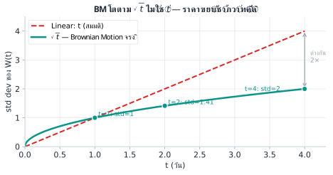
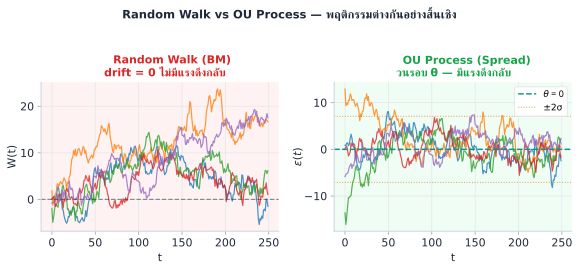
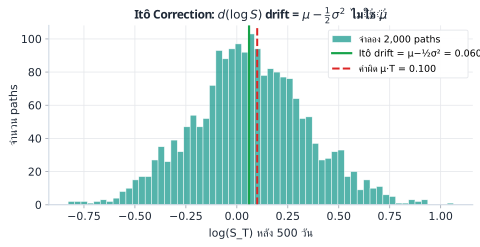

Spread \(\varepsilon\) เดิน SDE แบบ OU Process เพื่ออ่านสมการนี้ได้ต้องรู้ว่า \(dW\) คืออะไร และทำไม \((dW)^2\) ถึงไม่ตัดทิ้ง
Brownian Motion (หรือ Wiener Process) W(t) คือโมเดลที่ใช้อธิบายการเคลื่อนที่แบบสุ่มของราคา มีคุณสมบัติหลัก 3 ข้อ:

เราใช้ dW_t แทน W(t+dt) − W(t) — การขยับเล็กๆ ในช่วงเวลา dt
ถ้า x เดินแบบ smooth: dx = v·dt
(dx)² = v²·(dt)² → ตัดทิ้งได้ เพราะ dt² เล็กมาก
เช่น dt = 0.001 → dt² = 0.000001 ≈ 0
W เดินแบบ random: dW ≈ ±√dt
(dW)² ≈ (±√dt)² = dt → ไม่ใช่ dt² แต่เป็น dt
เช่น dt = 0.001 → (dW)² ≈ 0.001 ≠ 0
\(dW = \pm\sqrt{dt}\) ดังนั้น \((dW)^2 = (\sqrt{dt})^2 = dt\) — ไม่ใช่ \(dt^2\)
เมื่อสะสมทุก step: \(\sum (dW)^2 \approx n \cdot dt = T\) — ได้ค่าจริง ไม่หายไป
เปรียบ: ราคา BTC ขึ้นลงสลับกัน แต่ความผันผวนสะสมทุกนาที → ตัดทิ้งไม่ได้

SDE คือสมการที่บอกว่า process X เปลี่ยนอย่างไรในแต่ละช่วง dt:
| SDE | drift \(\mu\) | diffusion \(\sigma\) | ใช้กับ |
|---|---|---|---|
| GBM (Black-Scholes) | \(\mu S\) | \(\sigma S\) | ราคาหุ้น, options |
| OU Process (Spread) | \(\kappa(\theta-\varepsilon)\) | \(\sigma\) | spread, mean-reverting |
| Random Walk | \(0\) | \(\sigma\) | random walk ไม่มีแรงดึง |
ถ้าเราต้องการหา SDE ของ f(X) เมื่อรู้ SDE ของ X ใช้ Itô's Lemma:
| # | Calculus ธรรมดา | Itô's Lemma (Stochastic) | เหตุผลที่ต่างกัน |
|---|---|---|---|
| 1 | df = (∂f/∂t)dt + (∂f/∂x)dx | เริ่มเหมือนกัน | — |
| 2 | แทน dx = μdt + σdW | แทน dX = μdt + σdW | — |
| 3 | คิด Taylor: (dx)² → 0 ตัดทิ้ง | คิด Taylor: (dX)² = σ²dt ไม่ตัด! | (dW)²=dt ไม่ใช่ 0 |
| 4 | df = (∂f/∂t + μ∂f/∂x)dt + σ∂f/∂x dW | df = (∂f/∂t + μ∂f/∂X + ½σ²∂²f/∂X²)dt + σ∂f/∂X dW | Term พิเศษ ½σ²(∂²f/∂X²)dt |
Taylor expansion ของ f(X+dX): f(X+dX) = f(X) + f'·dX + ½f''·(dX)² + ...
ใน calculus ธรรมดา: (dX)² = (μdt + σdW)² ≈ σ²(dW)² → ถ้า (dW)²=0 ก็ตัดทิ้ง
ใน stochastic: (dW)² = dt → ½f''·σ²·dt ไม่หายไป → กลายเป็น term ใหม่ในสมการ
ถ้าใช้ log price spread: \(\varepsilon = \log P_A - \beta \log P_B\)
drift ของ \(\varepsilon\) จาก Itô \(= (\mu_A - \tfrac{1}{2}\sigma_A^2) - \beta(\mu_B - \tfrac{1}{2}\sigma_B^2)\)
ถ้าไม่รวม Itô correction → ประเมิน drift ผิด → เลือก β ผิด → ε drift ไม่หาย

สิ่งที่เราต้องการสำหรับ spread ε คือ SDE ที่มี drift "ดึงกลับ" เมื่อห่างจากค่ากลาง:
เมื่อ \(\varepsilon > \theta\): drift \(= \kappa(\theta - \varepsilon) < 0\) → ดึงลง
เมื่อ \(\varepsilon < \theta\): drift \(= \kappa(\theta - \varepsilon) > 0\) → ดันขึ้น
ขนาดแรงดึง \(\propto |\varepsilon - \theta|\) — ยิ่งห่างยิ่งแรง (Hooke's Law)
ในงาน quant จริงๆ ไม่ได้ integrate SDE ด้วยมือทุกวัน แต่ใช้ผลที่ได้จาก Itô's Lemma เป็นพื้นฐาน:
• drift ที่แท้จริงของ log return คือ \(\mu - \tfrac{1}{2}\sigma^2\) — ต้องใส่ใน Sharpe ratio calculation
• เมื่อ calibrate β ควรใช้ log return (ไม่ใช่ log price) เพื่อหลีกเลี่ยง spurious regression
• ใน production system เราจำลอง OU ด้วย discrete Euler-Maruyama: \(\varepsilon_{t+1} = \varepsilon_t + \kappa(\theta - \varepsilon_t)\Delta t + \sigma\sqrt{\Delta t}\,Z_t\) โดย \(Z_t \sim N(0,1)\)
SDE เป็นสมการ continuous-time ที่สวยงาม แต่ราคาจริงกระโดดเป็น discrete tick
ถ้า \(\Delta t\) ใหญ่มาก (เช่น daily bar) Euler-Maruyama simulation จะ drift จากเฉลยแท้จริง
ที่สำคัญกว่า: ตลาดมี jumps (flash crash, news shock) ที่ BM ไม่มีใน model
— loss จาก jump ใหญ่กว่าที่คาดจาก Normal distribution หลายเท่า บทที่ 23 จัดการเรื่องนี้ด้วย t-distribution
สมมติแบ่งช่วงเวลา T=2 ชั่วโมง เป็น n=8 ขั้น (dt = 0.25 ชม.) และ σ = 0.1% ต่อ √ชม.
ถาม: (a) dW แต่ละขั้นมี std dev เท่าไร? (b) Σ(dW)² ทั้งหมดมีค่าเท่าไร (โดย E)?
(a) std dev ของ dW แต่ละขั้น = √dt = √0.25 = 0.5 ชม.^(1/2)
ขยับในหน่วยราคา: σ·√dt = 0.1%·0.5 = 0.05% ต่อขั้น
(b) E[Σ(dW)²] = n × dt = 8 × 0.25 = 2.0 = T
ไม่ขึ้นกับ n (แบ่งละเอียดแค่ไหนก็ได้ 2 เสมอ)
กำหนด dX = 3 dt + 2 dW และ f(X) = X²
ถาม: หา df โดยใช้ Itô's Lemma และบอกว่า Itô correction เท่าไร
∂f/∂X = 2X, ∂²f/∂X² = 2, μ = 3, σ = 2
df = [μ·(∂f/∂X) + ½σ²·(∂²f/∂X²)] dt + σ·(∂f/∂X) dW
df = [3·2X + ½·4·2] dt + 2·2X dW
df = [6X + 4] dt + 4X dW
Itô correction = 4 dt — ถ้าใช้ chain rule ธรรมดาจะได้แค่ 6X dt (ขาด 4)
Spread ε เดิน OU: dε = 2(0.001 − ε) dt + 0.003 dW
ขณะนี้ ε = 0.005
ถาม: drift ตอนนี้เท่าไร (ต่อวัน) และบอกทิศทางและขนาด
drift = κ(θ − ε) = 2 × (0.001 − 0.005) = 2 × (−0.004) = −0.008 ต่อวัน
ทิศทาง: ลบ → ε ถูกดึงลงมาหา θ = 0.001 (ε ปัจจุบันสูงกว่า θ)
ขนาด: ใหญ่พอสมควร เพราะ ε − θ = 0.004 (ห่างกัน 4× σ_stat โดยประมาณ)
ใน 1 วัน: ε จะขยับลงเฉลี่ย 0.008 (ก่อนรวม noise)
Ch.2 Stochastic Calculus | ต่อไป → Ch.3: Ornstein-Uhlenbeck Process